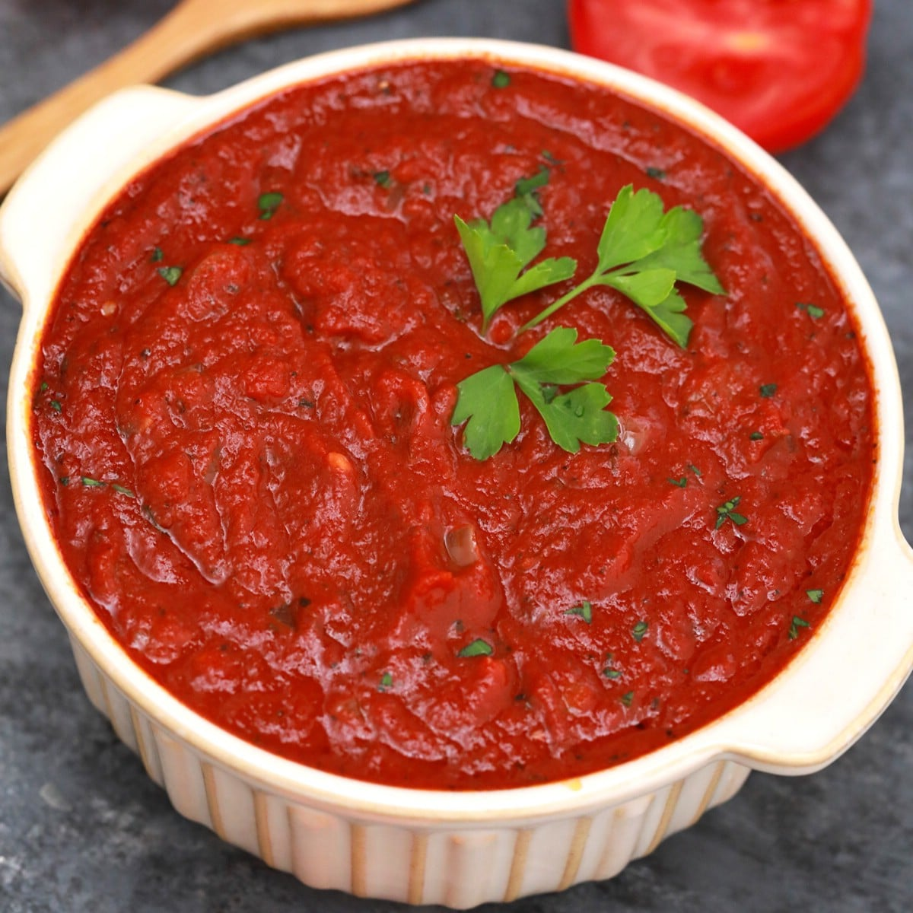

Homemade Spaghetti Sauce Recipe

Ingredients
- 1 pound ground beef
- Salt and ground pepper to taste
- 1 medium onion, chopped
- 15 ounces tomato sauce
- 6 ounces tomato paste
- 1/2 teaspoon Italian seasoning
- 1 Tablespoon dried parsley flakes
- 1 teaspoon garlic powder
- crushed red pepper flakes , to taste
- 1 Tablespoon Worcestershire sauce
- 1 Tablespoon granulated sugar
- 1 cup water
- 1/4 cup fresh basil leaves
- spaghetti noodles , for serving
Directions
- Season ground beef with salt and pepper.
- In a large skillet, add the beef and chopped onion and brown. Drain excess grease.
- Add tomato sauce, tomato paste, Italian seasoning, parsley, garlic powder, crushed red pepper, worcestershire, and sugar to the skillet.
- Stir well to combine and bring to a boil. Add water and stir well.
- Reduce heat and simmer for 30 minutes. Add chopped basil before serving, if desired.
- This sauce tastes great in Spaghetti Pie, Million Dollar Spaghetti, Slow Cooker Lasagna and Instant Pot Spaghetti.